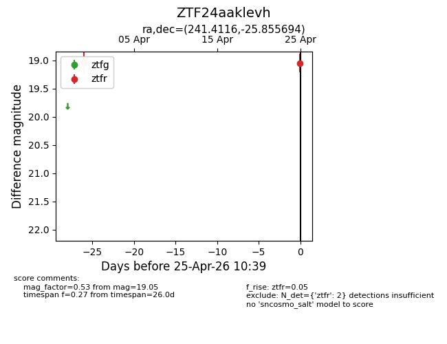
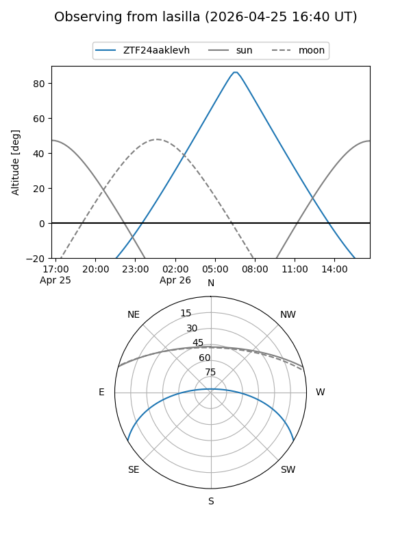
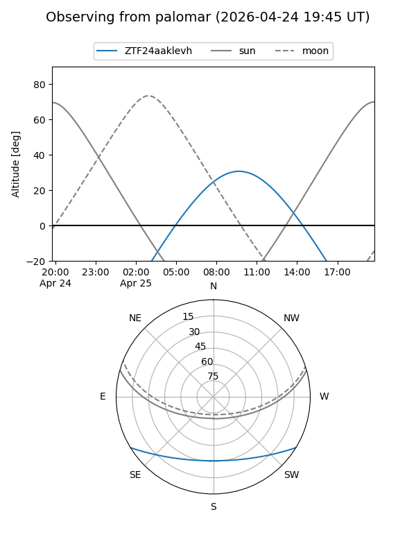

ZTF24aaklevh
Target ZTF24aaklevh at 2026-04-25 10:40
Aliases and brokers:
FINK: link
Lasair: link
ALeRCE: link
alt names
ZTF24aaklevh (ztf,fink_ztf)
Coordinates:
equatorial (ra, dec) = 241.4116,-25.85569
equatorial (HMS+DMS) = 16:05:38.79,-25:51:20.50
galactic (l, b) = (348.5664,+19.34688)
Flags:
Photometry:
last ztfr=19.05
2 ztfr detections
Lightcurve

Visibility


Additional plots